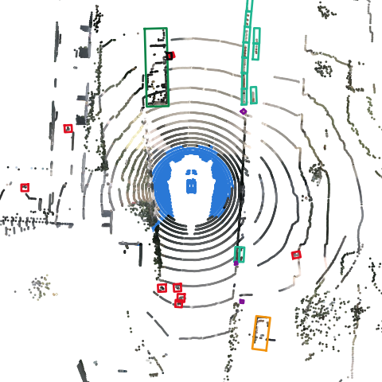

AV Perception: nuScenes Pipeline
A self-directed project building an autonomous-vehicle perception pipeline on the nuScenes dataset, with each stage validated against an independent reference before the next one builds on it. The learning and build logs document the reading, decisions and mistakes along the way.
Ray
PyArrow
SE(3) / SciPy
OpenCV
Plotly
1 · Foundations
2 · Ingestion + fusion
3 · Scene graph + VLA
4 · ROS2 + Nav2
5 · SLAM / SfM
6 · Home graph
7 · Flywheel
Now: geometric bird's-eye-view fusion of LiDAR points with camera colour: built and validated, with the interactive views published. Reading: Lift-Splat-Shoot, the first of the learned BEV papers. See the roadmap for what comes next.
1.53×
best Ray speedup (4 workers), and why it stops there

LiDAR + camera fusion in bird's-eye view: explore the interactive views
Explore
Learning logWhat I studied for each phase, the ideas I took from it, and where they show up in the code.
Build logEach milestone: goal, approach, how I checked it, what I learned.
ValidationThe chain of checks behind every stage, each against an independent reference, with its latest result.
ResultsRay scaling benchmark and projection-accuracy analysis.
BEV fusionInteractive top-down and 3D views of LiDAR + camera fusion, with annotated boxes.
RoadmapThe seven-phase plan, the optional extensions, and where this project is in it.